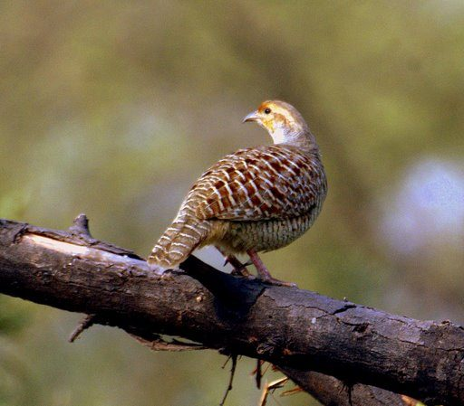

तीतरGrey Francolin
Francolinus pondicerianus · Phasianidae · BRD-0084

- Scientific name
- Francolinus pondicerianus (Gmelin, 1789)
- Family
- Phasianidae
- Hindi
- तीतर / सफ़ेद तीतर
- Status here
- native
- IUCN
- LC
When to look कब देखें
Present all year.
तीतर / Grey Francolin
Francolinus pondicerianus (Gmelin, 1789) — Phasianidae
तीतर — पूर्वी यूपी के घास के मैदानों में रहने वाली एक शर्माली चिड़िया। सुबह-सुबह की सीटी "ही-हू-ही-हू-ही" इसकी आवाज़ है। पर इसे देखना मुश्किल है क्योंकि यह घास में छिपी रहती है। शिकारी को भी इसका शिकार बहुत चाहता है।
Quick Identification त्वरित पहचान
| Feature | Description |
|---|---|
| Size | Small to medium partridge (30–33 cm total length); stocky body |
| Plumage | Dark grey and blackish-brown overall; heavily streaked with lighter buff |
| Breast and underparts | Rufous-buff with dark spots and streaking |
| Legs and feet | Red legs and cere (bare skin around eye) |
| Tail | Short, rounded tail; coverts barred |
| Head pattern | Ear coverts rufous; crown dark; fine white supercilium |
| In flight | Whirring flight; white outer tail feathers visible |
Field tip: A dark, heavily streaked partridge with rufous underparts and red legs, flushing from grassland with a loud whirring flight. The "hi-hoo" call at dawn is often the only clue to its presence.
Morphology आकारिकी
Biometrics (subspecies pondicerianus, northern India — the form in eastern UP):
| Measurement | Range |
|---|---|
| Total length | 300–330 mm |
| Wing (flattened chord) | 125–140 mm |
| Tail | 65–85 mm |
| Tarsus | 30–35 mm |
| Bill (culmen from base) | 18–22 mm |
| Weight | 165–190 g |
Plumage: Head dark brown; supercilium white and narrow. Back and wing coverts dark brown and blackish, heavily streaked with buff and rufous. Underparts rufous-buff, heavily spotted and streaked with dark brown. Breast more heavily marked than belly. Vent and undertail coverts buff. Tail dark brown with lighter barring.
Face and head: Cere around eye red; ear coverts rufous; lores dark brown.
Legs and feet: Red. Spurred (males only, but distinction in field unreliable).
Sexes: Males slightly larger; male has spurs on legs (females do not). Colour pattern similar.
Juveniles: Duller, with more buffer tones; bare parts paler.
Vocalisations
Grey Francolin has a loud, distinctive call, most prominent in the early morning and evening, and year-round during breeding season.
- Alarm and advertising call: A loud, clear "hi-hoo-hi-hoo-hi" or "tee-tarr-tee-tarr", repeated in series, heard from pre-dawn through mid-morning.
- Contact calls: Softer clucking and murmuring when flock is together.
- Roost call: Evening gathering calls.
Behaviour & Ecology व्यवहार और पारिस्थितिकी
Ground-dwelling: Grey Francolins are highly cryptic ground birds. They spend almost all their time in grass and on the ground, only flying when flushed or to reach a roost. When disturbed, they typically run rather than fly.
Coveys: Resident year-round in small groups or pairs; families stay together in coveys of 6–10 birds after breeding.
Feeding: Primarily feeds on seeds of grasses and weeds, and invertebrates (grasshoppers, beetles, termites, ants). Scratches the ground with its feet to expose food, like a domestic chicken.
Roosting: Roosts on the ground, typically in dense grass tussocks or under shrubs, where the bird can crouch and remain hidden. Nocturnal predation is a significant threat.
Life Cycle / Phenology जीवन चक्र
- November–February: Calling most intense; breeding season
- January–March: Nest construction begins; females choose nest site in tall grass tussock
- March–April: Eggs laid (clutch 4–6); incubation ~23 days
- May–July: Chicks hatch; parents lead covey through grassland
- August–October: Young fledge; coveys forage together
- Year-round: Resident; same pairs and families remain in territories
Host Plants or Prey आहार
Primary diet:
- Seeds of grasses (Echinochloa, Eleusine, wild millet)
- Seeds of common weeds and crops
- Grasshoppers and crickets (abundant in monsoon and post-monsoon)
- Beetles, ants, termites (especially winged castes)
- Small snails
Predators / Natural Enemies शत्रु
- Shikra (Accipiter badius) — primary aerial predator
- Laggar Falcon (Falco jugger) — hunts flying birds
- Indian Fox (Vulpes bengalensis) — takes birds from roosts at night
- Jackals — take chicks and eggs
- Snakes — raid nests and eat eggs
Agricultural / Human Relevance कृषि प्रासंगिकता
Hunting value: Historically, Grey Francolin was a game bird of considerable importance across northern India. Overhunting has reduced populations in many areas. Currently protected under Wildlife (Protection) Act, 1972 (Schedule IV).
Crop interactions: Feeds on seeds of agricultural weeds and occasionally on grain in fields immediately after harvest. Probably beneficial overall, though locally considered a pest when flocks concentrate on newly sown grain.
Cultural significance: Mentioned in historical accounts of Indian hunting traditions; featured in Mughal court hunts.
Expected Locally स्थानीय रूप से अपेक्षित
Not a field record. Written from published accounts for eastern Uttar Pradesh. No confirmed local sighting yet — if you have seen it, that is what the atlas needs.
अभी तक स्थानीय पुष्टि नहीं। यह विवरण प्रकाशित स्रोतों से है, किसी अवलोकन से नहीं।
Grey Francolin is expected in dry grassland patches and scrublands of Basti and Ayodhya districts, particularly where tall grass remains year-round. Its loud morning call makes it detectable even when unseen. Populations are sparse in intensively cultivated areas; best hoped for on village commons and along field margins in the drier seasons.
Distribution वितरण
Global range: Indian subcontinent — widespread in northern and central India, extending to parts of Pakistan and Bangladesh; absent from the highest Himalayas and the wettest regions of the Western Ghats and Northeast.
In India: Common resident throughout northern and central India up to about 1,500 m elevation; rare or absent in peninsular evergreen forests and the far Northeast.
In Uttar Pradesh: Widely distributed in grasslands and scrublands across the state, with populations declining in areas of intensive cultivation.
In Basti district / eastern UP: Expected on grassland commons, field margins, and areas with adequate grass cover. Distribution patchier than in drier regions further west.
Research Questions शोध प्रश्न
- Is Grey Francolin still present in Basti district? / बस्ती जिले में तीतर अभी भी पाई जाती है? — Listen for calling birds at dawn and dusk from November to February in grassland areas.
- Where do they roost and nest in our village? / वे अपने गाँव में कहाँ सोते और घोंसले बनाते हैं? — Search tall grass in field margins after heavy rain (birds leave tracks).
- What do coveys eat in each season? / अलग-अलग मौसम में तीतर क्या खाती है? — Examine droppings or watch feeding birds with binoculars.
- Do male and female use different roosting sites? / नर और मादा अलग जगह सोती हैं? — No equipment needed — listen for roosting calls at dusk.
- How has the population changed since your parents were young? / आपके माता-पिता के समय से आबादी कैसे बदली है? — Ask elders if they hunted or saw francolins; compare then and now.
Similar Species मिलती-जुलती प्रजातियाँ
| Species | How to tell apart | हिंदी |
|---|---|---|
| Black Francolin (Francolinus francolinus) | Heavier; male entirely black with white spots (female similar to Grey Francolin); red legs; calls louder "ka-tee, ka-tee" | काली तीतर — भारी काया |
| Common Quail (Coturnix coturnix) | Much smaller (15 cm); three pale lines on head; short tail; pale throat | बटेर — बहुत छोटी |
| Jungle Bush Quail (Perdicula asiatica) | Smaller (13 cm); spotted brown plumage; group roosts together; quiet | जंगली बटेर |
Field rule: A dark partridge 30+ cm long, with red legs and red eye-patch, flushing with a whirring flight from grassland with a loud "hi-hoo" call = Grey Francolin.
Taxonomy & Classification वर्गीकरण
Original description. Francolinus pondicerianus was described by Johann Reinhold Forster (as Perdix pondiceriana) based on Gmelin's 1789 nomenclature. Type locality: Pondicherry, southern India.
Subspecies. Two subspecies are recognised:
| Subspecies | Authority | Range |
|---|---|---|
| F. p. pondicerianus | (Gmelin, 1789) | Northern India, northern Deccan — UP subspecies |
| F. p. mecranensis | (Hume, 1873) | Baluchistan and Pakistan |
Family and order placement. Order Galliformes (game birds, pheasants, fowl, quails); family Phasianidae (pheasants, partridges, junglefowl, quails). The genus Francolinus contains ~40 species of francolins and spurfowl distributed across Africa and southern Asia.
Phylogenetic notes. Molecular work places Francolinus in a clade with Asian partridges; the closest living relatives are African spurfowl.
IUCN status rationale. Assessed as Least Concern. The species remains widespread across much of its range, though populations have declined significantly in areas of intensive cultivation and heavy hunting.
Photo Gallery फोटो गैलरी
Note: Add field photos tomedia/species/grey_francolin/
फोटो निर्देश: पास से (लाल पैर और लाल आँख दिखाते हुए), घास में छिपी हुई (जहाँ ये आम तौर पर होती है), और उड़ते समय (सफेद बाहरी पंख दिखाते हुए)।
Photos needed आवश्यक फोटो
- [ ] Perched bird showing red legs and eye-patch (लाल पैर + आँख)
- [ ] Hiding in grass (घास में छिपी)
- [ ] In flight with white outer tail feathers visible (उड़ते समय सफेद पंख)
- [ ] Covey feeding on ground (समूह खाते हुए)
- [ ] At roosting site in tall grass (शाम को घास में)
References संदर्भ
- Gmelin, J.F. (1789). Systema Naturae per regna tria naturae. Editio Decima Tertia. G.E. Beer, Lipsiae, p. 765. [original description]
- Ali, S. & Ripley, S.D. (1987). Handbook of the Birds of India and Pakistan. Vol. 2. Oxford University Press, New Delhi.
- Grimmett, R., Inskipp, C. & Inskipp, T. (2011). Birds of the Indian Subcontinent. 2nd ed. Christopher Helm, London.
- Rasmussen, P.C. & Anderton, J.C. (2005). Birds of South Asia: The Ripley Guide. Smithsonian Institution, Washington.
- Collar, N. & Goriup, P. (1994). The partridges, quails, francolins and snowcock. In: Handbook of the Birds of the World Vol. 2 (pp. 434–464). Lynx Edicions, Barcelona.
- BirdLife International (2024). Francolinus pondicerianus. IUCN Red List of Threatened Species. Ver. 2024.
- GBIF Occurrence Data — Francolinus pondicerianus, Uttar Pradesh (2010–2025).
Source file: species/fauna/birds/grey_francolin.md